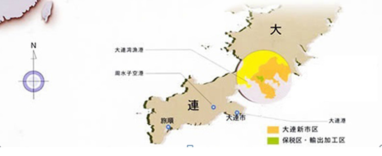

大连诚技机电设备有限公司始创于2002年，始终本着“诚以为人，技以为业”的经营和服务理念，全心全力致力于国内外锻造和冲压压力机的维修、改造以及其配套生产线的非标设计制作，已经跻身于国内重型压力机维修改造的重要供应商行列。
公司坐落在美丽的海滨城市大连，设有1个办公区和1个工厂区，现有职工100余人。拥有30多位机械、电气、工控、计算机等专业的技术人才。
为了更好加强公司的管理，公司积极引进了一些现代化的企业管理手段，顺利通过了ISO9001质量管理体系认证，实施了计算机辅助设计系统、ERP、OA等管理，不但提高了工作效率，同时能够更好的为客户提供高效服务。
公司主要生产成套液压站、平锻机及供应大型压力机、冲床、热模锻等设备备件，现主要产品有液压润滑站、换向阀、过载保护阀、双联泵、液压油缸。大修改造主要包括机械压力机大修改造、压力机搬迁、自动化设计改造、压力机备件、平锻机制造及维修、热模锻维修与改造等，并代理日本SR产品。
公司业务范围遍及全国各地，并且与国内很多汽车制造厂、重型设备生产企业建立长期友好的合作关系。如神龙汽车、一汽解放、一汽大众、天津一汽丰田、郑州日产、南京依维柯、东风日产、东风乘用车、东风商用车、东风柳汽、一汽解放、一汽大众、一汽青岛、一汽云南红塔、一汽夏利、北京博萨、北汽福田、长安福特、长城汽车、吉利汽车、华晨汽车、奇瑞汽车、江淮汽车、江铃汽车、一汽模具、黄海汽车、庆铃汽车等。
